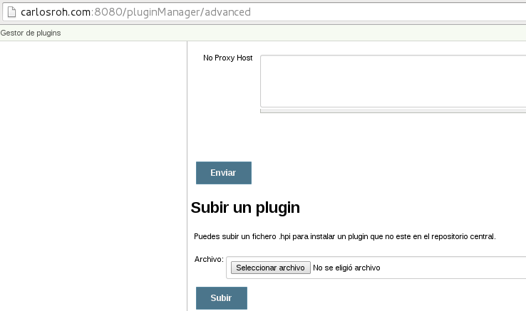

¿Que es Jenkins CI?
- Es una aplicación que supervisa las ejecuciones de trabajos repetidos.
- Construir y testear proyectos de software.
- Monitorear ejecuciones de trabajos/tareas externas.
- Técnicamente es Alfred Pennyworth de los developers.
- Esta enfocado en...
¿Quien lo usa?
Instalación
- Mediante un .war
- Java Runtime Environment (JRE) 1.6 o superior
- Descarga jenkins,war
- Ejecutas java -jar jenkins.war
Si requiere instalar alguna dependencia, aqui se le pedirá. - Entrar a jenkins a travez del puerto 8080, por ejemplo carlosroh:com:8080
- Ubuntu/Debian
$ wget -q -O - http://pkg.jenkins-ci.org/debian/jenkins-ci.org.key | sudo apt-key add -
$ sudo sh -c 'echo deb http://pkg.jenkins-ci.org/debian binary/ > /etc/apt/sources.list.d/jenkins.list'
$ sudo apt-get update
$ sudo apt-get install jenkins
Plugins
- GitHub
- Instalación manual
como los hombres$ wget http://updates.jenkins-ci.org/download/plugins/github/1.9.1/github.hpi $ cp * $JENKINS_HOME/plugins $ servjenkins restart
Plugins
- GitHub
- A la windows
Administrar Jenkins > Administrar plugins > Todos los plugins
Reiniciar Jenkins
Plugins
- GitHub
- A la windows
Administrar Jenkins > Administrar plugins > Configuración avanzada
Reiniciar Jenkins
Demo time...
Alguien esta listo para tronar mi demo...
Demo time...
- TODO List... (ustedes no han visto nada)
- Instalar el plugin de GitHub
- Configurar el proyecto
- Agregar los webhooks requeridos por GitHub
- Crear el token de autentificacion en la cuenta personal de GitHub
- Muchas cosas mas...
Alguien esta listo para tronar mi demo...
Pregunta existencial...
Continuous Integration vs Continuous Deployment vs Continuous Delivery?- Continuous Integration (CI) is the practice, in software engineering, of merging all developer working copies with a shared mainline several times a day.
- Continuous Delivery (CD), a logical step forward from continuous integration. If your tests are run constantly, and you trust your tests to provide a guarantee of quality, then it becomes possible to release your software at any point in time.
- Continuous Deployment (CD) is the ultimate culmination of this process; it’s the actual delivery of features and fixes to the customer as soon as they are ready.
Fin

Referencias
- https://wiki.jenkins-ci.org/display/JENKINS/GitHub+Plugin#GitHubPlugin-GithubPlugin
- https://www.digitalocean.com/community/tutorials/how-to-install-and-use-jenkins-on-ubuntu-12-04
/